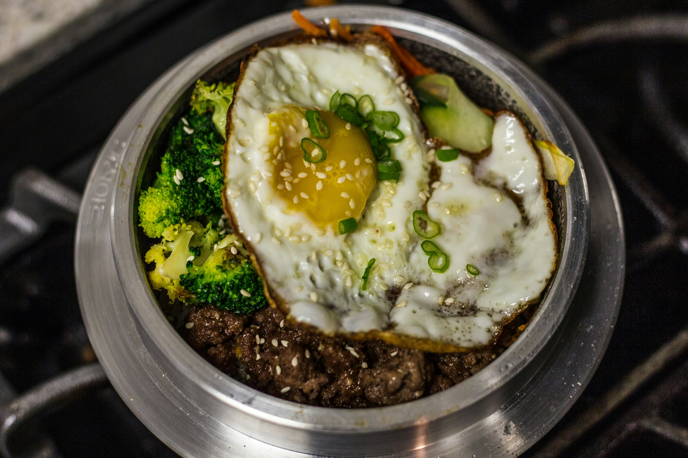

Bulgogi

Photo by Delaney Van on Unsplash
Description
Delicious high-protein korean inspired home-style beef recipe.
Ingredients
- boneless rib eye steak
- coursely grated peeled peer
- garlic powder
- 1/4 cup reduced sodium soy sauce
- 2 tablespoons brown sugar
- 2 tablespoons toasted sesame oil
- 1 tablespoon gochujang, Korean red pepper paste
- 2 tablespoons vegetable oil, divided
- sliced green onions
- toasted sesame seeds
Steps
- Wrap steak in plastic wrap, and place in the freezer for 30 minutes. Unwrap and slice across the grain into 1/4-inch thick slices.
- In a bowl, combine pear, garlic powder, soy sauce, brown sugar, sesame oil, and gochujang. Marinate the beef with the sauce mixture for at least 2 hours to overnight.
- Heat 1 tablespoon vegetable oil in a cast iron grill pan over medium-high heat. Working in batches, add steak to the grill pan in a single layer and cook, flipping once, until charred and cooked through, about 2-3 minutes per side.
- Serve immediately, garnished with green onions and sesame seeds, if desired.
Home